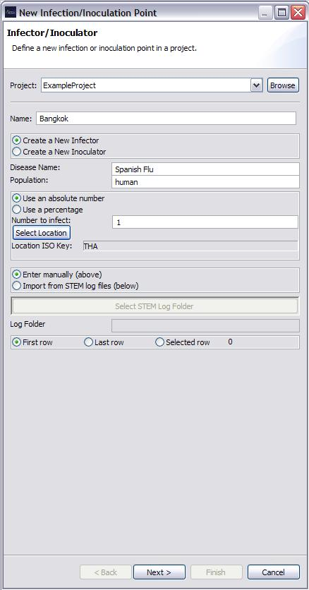
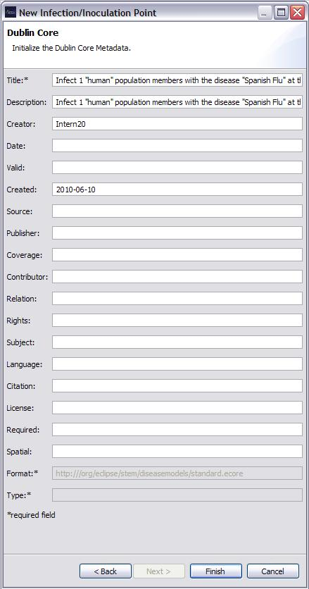

The New Infector/Inoculator Wizard is used to create and define the
properties of a new Infector or Inoculator. A Name and Disease Name must be provided in order to be
able to click "Next" or "Finish".
Properties that can be specified within the New Infector/Inoculator Wizard are:
- Whether to create a New Infector or a New Inoculator
- Disease Name
- Population: i.e., human
If the data is to be entered manually (specified by clicking "Enter Manually"), you need to provide:
- Whether to infect/inoculate an absolute number or a percentage of the population
- The number (or percent) to infect/inoculate
- The location to infect/inoculate at.
If data is to be imported from a file (specified by clicking "Import from STEM log files), you need to provide:
- Whether to infect/inoculate an absolute number or a percentage of the population
- The location of a STEM log folder
- The row to use to infect or inoculate from

